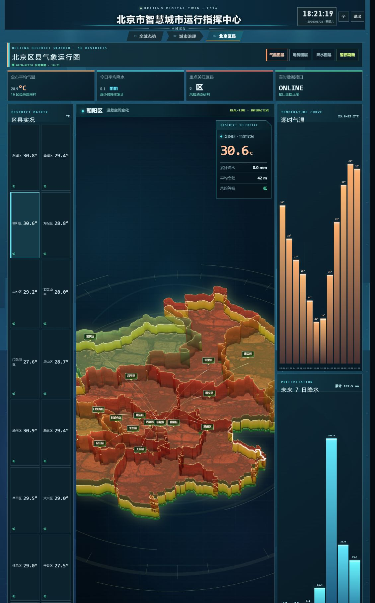
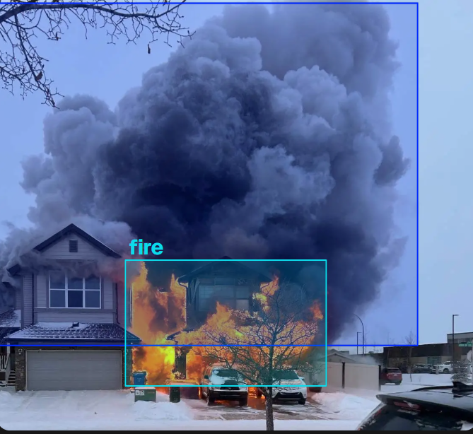
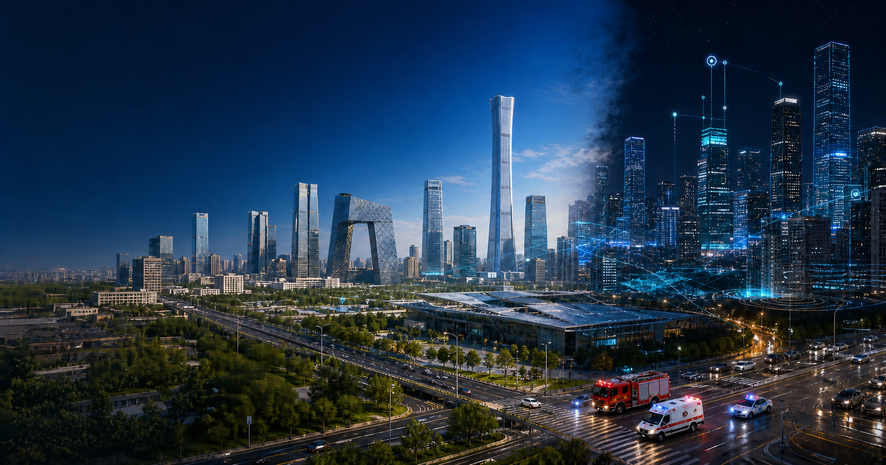

京域智城 ×
灵境哨兵
面向城市运行与突发事件的可视化决策平台
从北京城市态势感知，进入可解释的全链路应急处置
城市运行进入“多源感知、跨部门协同、可解释决策”并重阶段
风险沿数据、道路与组织链条连续传播
危化品车辆发生故障后，事故图片、气体浓度、风向风速、道路通行和救援资源会在几分钟内相互影响。单一监控页面只能看到局部状态，无法解释“下一步为什么这样行动”。
京域智城提供城市数字底座，灵境哨兵完成危化品事故专项处置
京域智城
承载北京 16 区态势、核心城区三维场景、道路、建筑、气象和治理数据。
灵境哨兵
完成事故识别、风险扩散、道路封控、路径重规划、多部门调度与报告生成。
平台负责“看见城市”，专项应用负责“处理事件”；两者共享同一套地图、道路、气象、救援资源和事件状态。
数据、研判与协同没有形成闭环
数据分散
事故图片、气体传感器、天气、道路、医院和消防资源分布在不同系统，难以形成统一事件视图。
研判割裂
风险识别、扩散范围、道路封控和救援调度由不同人员分别处理，计算结果缺少统一空间坐标。
协同缓慢
信息反复上报和人工确认，消防、医疗、警务、交通难以在同一时间窗口内同步行动。
项目的判断：需要一个共享数字底座，把现场输入、算法结果和部门行动串成可追溯链路。
北京市级区县态势
与核心区三维场景并存
平台覆盖北京 16 区的气象与治理态势；三维建筑与道路场景集中在北京核心城区数据范围，用于交互演示、风险区叠加和救援路径规划。
因此我们不宣称“全北京市所有建筑一一建模”，而是用可验证的数据边界支撑比赛演示。
16 区
温度、降水、地势与治理态势联动。
核心城区
建筑、道路、车辆与风险图层可交互。
来源可查
原始记录、降级状态和算法边界明确展示。
京域智城把城市运行拆成三种可操作视角
看城市空间
三维建筑、真实道路、车流与城市运行指标组合成统一空间视图。
看治理闭环
事件闭环率、设备在线率、平均响应时间与交通指数形成运营反馈。
看区域差异
16 区温度、降水和代表性地势数据支持图层切换与区县联动。
三维地图不是背景图，而是算法结果、事件状态和资源位置共同落地的空间对象。
建筑、道路与事件
共享统一坐标
建筑支持点击查看名称；道路承担车辆运动、封控标记和 A* 搜索；风险区与救援资源叠加在同一空间中。

区县气象不是装饰
而是风险计算输入
温度与降水通过 Open-Meteo 接口按区县代表坐标获取；接口异常时切换到带时间戳的离线快照，保证现场演示连续。
地势采用区县代表性高程，用于演示空间差异，不宣称等同于官方测站或完整 DEM 产品。
输入变化 → 图层更新 → 风险研判条件变化。
治理指标回答三个问题

从交互终端到底层数据，每层职责清晰
交互终端层
- 登录与城市大屏
- 专项演示入口
- 数据详情与报告
可视化表现层
- Three.js 三维城市
- 风险区与车辆动画
- 四车分屏
业务编排层
- 事故状态机
- 资源调度
- 消息与流程控制
算法能力层
- ONNX 图像识别
- Gaussian Plume
- A* 与规则编排
数据与运行层
- 建筑 / 道路 / GeoJSON
- 气象 / 测试集 / 日志
- WASM 与离线资源
平台不是单向大屏
而是持续回写的处置闭环
每个结果都有输入、依据、执行状态和时间戳，评委可以逐步检查“系统为什么这样判断”。
危化品事故
全链路处置
从车辆故障、联合告警，到风险扩散、道路封控、救援抵达与报告生成。
约 72 秒可交互演示脚本
每一步都有可见输入与可检查输出
可暂停
停在关键算法结果，便于评委追问。
可跳转
直接进入任一处置阶段，避免重复等待。
可重放
重置状态机，保证现场演示可恢复。
图片在浏览器本地完成 ONNX 推理
模型通过 ONNX Runtime Web 与 WASM 执行，图片不上传服务器；输出类别、检测框、置信度、推理耗时和降级状态。

我们展示成功，也主动展示误判
本地回归结果：TP=3、FP=1、TN=3、FN=0。该集合仅用于项目回归与现场复核，不代表真实城市环境的泛化性能。
正式研判必须结合气体传感器、车辆遥测和人工复核。

Gaussian Plume 负责解释
污染物如何随风传播
输入泄漏位置、源强、风向、风速与 Pasquill-D 稳定度，计算动态风险区和警戒范围。
这是可解释的物理计算原型，不是 AI 预测；演示参数与阈值不等同于真实事故标定结果。
风险区改变道路权重
A* 重新搜索消防路线
系统在 674 条道路记录构成的图网络上，将风险区覆盖路段标记为不可通行，输出新路线、距离、预计到达时间和搜索节点。
当前实现中，消防车执行真实道路图 A* 重规划；救护车和警车使用预设路线种子，不夸大为全部车辆动态寻路。
四类智能体接收真实任务数据，而不是空泛提示词
泄漏位置、道路封控、车辆状态、路线距离与 ETA。
汇总事件等级、扩散范围和资源状态，依据确定性规则形成任务序列，并记录每次决策。
医院资源、伤员状态、接诊能力与到达时序。
受影响路段、封控范围、替代路线与疏散通道。
保存输入、消息、规则、状态和时间戳，支持复盘。
技术边界：采用确定性任务编排，不宣称“大模型完全自主决策”。
救援动画展示的不只是“车在移动”
分屏同步显示车辆类型、时速、当前路段、剩余距离、预计到达时间与任务状态。
地图主视角保持稳定，车辆相机与道路方向解耦，避免演示过程中抖动和建筑遮挡。
一次演示结束，留下可复盘的处置记录
危化品运输事故应急处置报告
18:02:14 VISION_RESULT committed
18:02:16 PLUME_ZONE updated
18:02:18 ROAD_150552496 blocked
18:02:20 FIRE_ROUTE recalculated
18:02:22 AGENT_TASK dispatched
18:03:11 REPORT generated优势与边界同时呈现，竞争判断才可信
端侧推理 · 空间联动 · 可追溯
城市底座与专项处置真正共用地图和坐标；识别、扩散、路径与报告形成完整证据链；在线与离线使用同一核心资产。
测试集规模有限 · 核心城区建模边界
当前视觉回归集仅用于项目验证，不代表真实城市泛化性能；三维建筑集中于核心城区，仍需更多权威数据校验。
城市数字化与端侧智能需求增长
应急管理、园区安全、危化运输与城市治理均需要低延迟、可解释、可离线的协同决策工具。
数据合规 · 接口波动 · 模型误判
公开地图与气象接口存在可用性风险；现场决策不能只依赖模型，必须结合传感器、人工复核与算法降级策略。
数字孪生 × 算法证据 × 协同处置
决策闭环ONE SPACE · ONE TIMELINE
团队能力与项目交付链一一对应
王昊鹏
系统架构、业务功能、三维交互与算法接入。
高昕志
功能回归、演示流程、兼容性与验收验证。
王昊然
大屏视觉、信息层级与交互一致性。
李晟熙
构建发布、GitHub Pages、离线运行包与现场保障。
让城市看得见
让处置有依据
京域智城提供共享数字孪生底座，灵境哨兵把 AI 识别、物理扩散、路径规划与部门协同 连接成可操作、可解释、可追溯的应急处置闭环。
人工智能与软件创新比赛 · 项目答辩